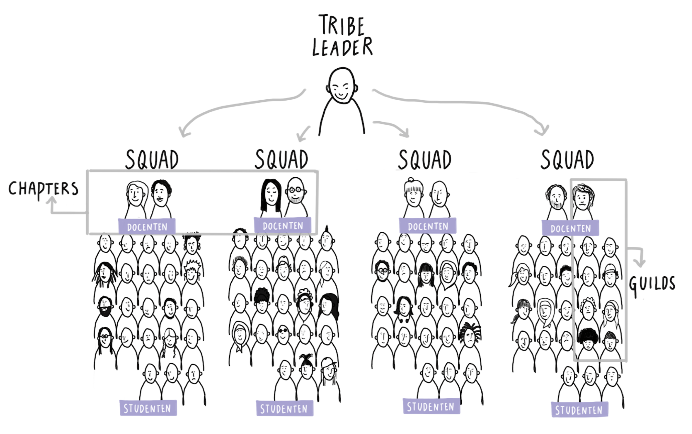

Organisatie
Structuur
Agile organisatie
Om dicht bij het beroepenveld te blijven wordt de organisatie van de Ad Frontend Design & Development ingericht volgens de Agile organisatiestructuur (Spotify-model). Dit houdt in dat we studenten en docenten indelen in tribes, squads, chapters en guilds. Nota bene: we spreken bij FDND dus niet over klassen!

Tribes zijn de grootste organisatie-eenheid en kunnen vergeleken worden met een cluster bij andere opleidingen. Een tribe bestaat uit maximaal 100 personen, bestaande uit docenten én studenten. Één docent is tribe leader (0,2 fte) en is verantwoordelijk voor de coördinatie, roostering en evaluatie van onderwijsactiviteiten van de tribe. De tribe leader is de 1e contactpersoon voor docenten binnen de tribe, er is binnen tribes een regelmatige overlegstructuur en docenten weten van elkaar wat er speelt. Een tribe bestaat uit maximaal vier squads.
Squads zijn een kleinere organisatie-eenheid binnen een tribe en kunnen vergeleken worden met een klas bij andere opleidingen. Een squad bestaat uit maximaal 25 personen, docenten én studenten. Één docent is squad-leader (0,45 fte) en eindverantwoordelijk voor het dagelijks onderwijs van een squad. De squad-leader kent alle studenten in de squad en begeleid deze bij het volbrengen van leertaken. De squad-leader verzorgt workshops, talks en overlegt en stemt af met co-teachers en gastsprekers. Ook neemt de squad-leader deel aan overleg binnen de tribe.
Chapters zijn groepen docenten en professionals met een bepaald expertise (bijvoorbeeld API nerds/ node.js/ design languages etc.) die met regelmaat bijeen komen om ervaring te delen en ontwikkeling bij te houden.
Guilds zijn groepen docenten én studenten met een gedeeld kenmerk, bijvoorbeeld een guild voor studenten die extra aandacht nodig hebben, een guild voor engels, een guild voor hoogvliegers, een guild die het opleidingsmodel itereert, een guild die leertaken bijwerkt, een toetscommissie, opleidingscommissie et cetera.
Rollen
Co-teacher (0,2 - 0,4 fte)
De Ad FDND vraagt van docenten dat zij naast inhoudsdeskundige en beoordelaar ook begeleider zijn die samen met de student het leerproces van de student stimuleert en vormgeeft.
Een co-teacher:
- Heeft een van de of een combinatie van de expertises Frontend-developer, Interaction Designer of Digital Designer;
- Begeleid studenten bij het volbrengen van deel- en leertaken;
- Verzorgt af en toe een talk of een workshop in afstemming met squad-leader(s);
- Overlegt en stemt af met de squad-leader;
- Neemt deel aan Standup, Plan & Review en Retrospective meetings.
- (In het geval van assesorschap) Heeft assessorcertificering of is bereid deze te behalen;
Squad-leader (0,5 fte)
De Ad FDND vraagt van docenten dat zij naast inhoudsdeskundige en beoordelaar ook begeleider zijn die samen met de student het leerproces van de student stimuleert en vormgeeft.
Een squad-leader:
- Heeft een van de of een combinatie van de expertises Frontend-developer, Interaction Designer of Digital Designer;
- Heeft de basiskwalificatie didactische bekwaamheid (BDB) en de basiskwalificatie examinator (BKE) of is bezig deze te behalen;
- Heeft assessorcertificering of is bezig deze te behalen;
- Is eindverantwoordelijk voor het leerproces binnen de squad;
- Kent de studenten in de squad en begeleid bij het volbrengen van deel- en leertaken;
- Is op de hoogte van en draagt bij aan de invulling van het onderwijsprogramma;
- Verzorgt regelmatig talks en workshops in afstemming met andere squad-leaders;
- Overlegt en stemt af met co-teachers en gastsprekers;
- Neemt deel aan Standup, Plan & Review en Retrospective meetings.
Tribe-leader (0,2 fte)
Maximaal vier squads vormen een tribe en deze hebben een tribe-leader. Bij meer tribes worden verantwoordelijkheden gedeeld door meerdere tribe-leaders. Één tribe leader is aanspreektpunt voor het opleidingshoofd.
Een tribe-leader:
- Heeft een van de of een combinatie van de expertises Frontend-developer, Interaction Designer of Digital Designer;
- Heeft basiskwalificatie didactische bekwaamheid (BDB), basiskwalificatie examinator (BKE) en assessorcertificering of is bezig deze te behalen;
- Is eindverantwoordelijk voor het leerproces binnen een tribe bestaande uit maximaal vier squads;
- Is eindverantwoordelijk en draagt bij aan de invulling van het onderwijsprogramma;
- Is eindverantwoordelijk en neemt deel aan Standup, Plan & Review, Programmacoordinatie en Retrospective meetings.
- Is eindverantwoordelijk en aanspreekpunt voor cijfers (SIS), onderwijs en examenregelement (OER), studiegids, open dagen, studiekeuzecheck, communicatie, facilitair, personeel en cyclus, instroom, mbo/hbo doorstroom en afstemming met FDMCI en HvA.
Assessoren
De examencommissie stelt jaarlijks voor elk blok assessoren (examinatoren) aan op voordracht van de tribe-leader van de Ad Frontend Design & Development (namens het opleidingshoofd). De docent als assessor is aantoonbaar gekwalificeerd voor het beoordelen van opdrachten en beschikt minimaal over een Basis Kwalificatie Examinering (BKE). De basiscriteria die bij het aanwijzen van assessoren worden gehanteerd, zijn:
- voor alle beoordelingen geldt dat de examinator minimaal beschikt over een diploma op bachelorniveau;
- nieuwe docenten die nog niet geschoold zijn in ontwikkelingsgericht begeleiden en/of nog niet aangewezen zijn als examinator, worden begeleid door een ervaren begeleider en/of beoordelaar;
- een beoordelaar volgt regelmatig scholing/ kalibratiesessies om de eigen deskundigheid ten aanzien van toetsen en feedback geven te vergroten;
- kent de beroepspraktijk;
- assessoren zijn gecertificeerd in het beoordelen van beroepsproducten op eindniveau alsmede het afnemen van een portfolio-assessment.
In samenwerking met de HvA Academie is een professionaliseringstraject vormgegeven, gericht op toetsen en beoordelen op niveau 5 en coachend begeleiden, waaronder het geven van feedback. Het docententeam en leden van de examencommissie zullen dit professionaliseringstraject volgen.
Opleidingscommissie
Bij aanvang van de opleiding in september 2021 zal zo snel mogelijk gestart worden met het formeren van een opleidingscommissie (OC) bestaande uit twee docenten en twee studenten. De rechten en plichten van deze commissie zijn vastgelegd in een HvA breed reglement. In de opstarase van de opleiding is veelvuldig overleg met de OC belangrijk. Daarom overleggen zij naast de eigen vergaderingen eenmaal per zes weken met de tribe leaders en eenmaal per blok met de opleidingsmanager van de bachelor Communicaon and Mulmedia Design over de kwaliteit van de opleiding, de uitkomsten van onderwijsevaluaes en de uitvoering van de Onderwijs- en Examenregeling (OER). De uitkomsten van deze gesprekken worden besproken met het docententeam en zijn sturend voor de onderwijsontwikkeling.
Werkwijze
Standup Meeting
Wekelijkse ontmoeting om het werk te organiseren, leren te faciliteren en productiviteit en effectiviteit te verbeteren.
Tribe-leaders, squad-leaders en co-teachers treffen elkaar wekelijks op maandag tussen 13.00 - 13.30 (liever 13.15!). We bespreken per persoon het volgende:
- Wat heb je gedaan?
- Waar heb je hulp bij nodig?
- Wat ga je aankomende week doen?
- Wat komt er in de nabije toekomst aan? (aan/afwezigheid)
Belangrijk is dat we tijdens een standup NIET in detail treden of problemen gaan oplossen. Eventuele nieuwe taken worden opgenomen in de Todo kolom en nog niet in de backlog geplaatst!
Programmacoördinatie meeting
Wekelijkse ontmoeting voor coordinatie van het onderwijsprogramma.
Tribe-leaders treffen elkaar wekelijks op donderdag tussen 9.30 - 11.00. Onderwerpen die behandeld worden zijn:
- De planning op programma.fdnd.nl;
- Aanmaken van taken met betrekking tot het programma;
- Bespreken van drivers en ideeën en daar uit volgende taken.
Belangrijk is dat taken worden aangemaakt in de Todo kolom en nog niet in de backlog geplaatst!
Planning & Review Meeting
Wekelijkse ontmoeting om het werk te plannen, taken te verdelen en voortgang te bewaken.
Tribe-leaders, squad-leaders en eventueel co-teachers treffen elkaar wekelijks op vrijdag tussen 13.00 - 14.00. Onderwerpen die worden behandeld zijn:
- Planning op programma.fdnd.nl bekijken;
- Planbord gezamenlijk en in overleg bekijken en bijwerken: Todo, Backlog, In progress, Review;
- Taken in de kolom Done gezamenlijk sluiten;
- Nieuwe taken verdelen en claimen (mag met meer personen);
- Aanwezigheid huidige (en aankomende) sprint bespreken.
Higher Education Agile Learning (HEAL)
We besteden elk blok tijd aan het reflecteren op eerdere ervaring, leren hiervan en beslissen hoe we onze werk- en onderwijsprocessen kunnen verbeteren.
Vier keer per jaar treffen alle tribe-leaders, squad-leaders en co-teachers elkaar tijdens een Higher Education Agile Learning (HEAL) ontmoeting om te reflecteren op de afgelopen periode. Een HEAL neemt een dagdeel (4 uur) in beslag en is opgenomen in de jaarplanning.
360º feedback
Twee keer, rond de Midterm, staat de HEAL in het teken van een 360º feedback sessie waarin teamleden elkaar in rondes feedback geven op basis van de resultaatgebieden uit de HvA brede Hay-profielen voor docenten. Deze resultaatgebieden zijn:
- Algemeen: Algemene indruk van betreffende collega.
- Onderwijsontwikkeling: Vernieuwing van de opzet en uitvoering van onderwijsonderdelen.
- Onderwijsuitvoering: Voorbereiden en verzorgen van onderwijsonderdelen en het beoordelen van studenten.
- Onderwijsevaluatie: Evalueren van de opzet en uitvoering van onderwijs (inclusief toetsing) en voorstellen van mogelijke verbeteringen in didactiek en/of inhoud.
- Begeleiding van studenten: Uitvoeren van studentbegeleiding en (studieloopbaan-)coaching.
- Kennispartner in het vakgebied: Uitdragen en openbaar maken van kennis van het eigen vakgebied/ onderzoeksgebied/ specialisme/ practice based evidence-methodieken, intern en extern, alsmede onderhouden, uitbouwen en benutten van contacten met het beroepenveld en andere belanghebbenden.
- Participatie: Actieve deelname aan het docententeam.
- Vitaliteit: De balans tussen werk en privé (voor zover de collega dit publiek wil delen).
Retrospect
Twee keer, rond de Endterm, staat de HEAL in het teken van een retrospective. Het doel van de meeting is de organisatie en het onderwijs aan te passen aan de situatie en context waar ze zich in bevind. De retrospective meeting wordt gefaciliteerd en voorbereid door tribe-leaders en kent een vaste structuur. Het resultaat van een retrospective meeting zijn veranderingen in onderwijs- en organisatieprocessen, nieuwe taken, gezamenlijke beslissingen en drivers die een beslissing behoeven. De vijf fasen van een retrospective meeting zijn:
- Inchecken
- Informatie verzamelen
- Inzichten genereren
- Beslissen wat we gaan doen
- Sluiting
Een hulpmiddel voor het plannen van activiteiten voor de verschilende fases is retromat.org.